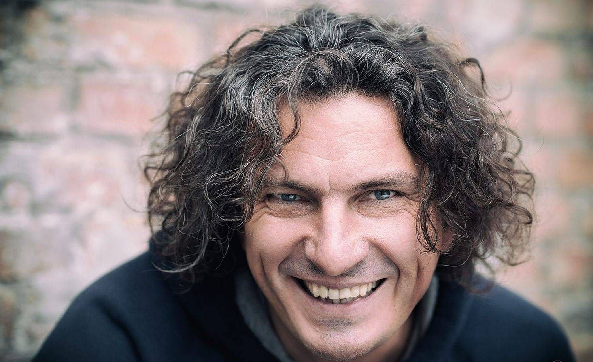

2 лютого 2018 минає третя річниця з дня загибелі Андрія Кузьменка, лідера гурту «Скрябін». Усім він відомий, у першу чергу, як музикант, однак поле його діяльності було значно ширшим.
Його слова давно розібрали на цитати. Кузьма запам`ятається нам людиною, яка завжди говорить те, що думає. Незалежно від того, в яке місто країни він приїздив з концертом, він не приїздив просто як співак. Він приїздив як Друг, ставав другом для кожного.